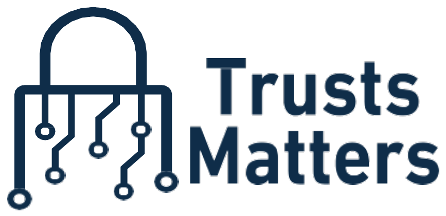

Brand GuidelinesThe visual and verbal identity system for Trusts Matters — cybersecurity, GRC, offensive security and IT for the Kingdom's most important organizations.
Who Trusts Matters is, in a sentence, and the ideas every piece of communication should reinforce.
Make trusted, resilient technology the default for every organization we serve — protecting critical assets while enabling secure digital growth.
To be the Kingdom's partner of choice for integrated cybersecurity and IT, advancing the national digital agenda under Saudi Vision 2030.
Integrity in every engagement. Excellence grounded in standards. Partnership over transactions. Confidentiality, always.
The Trusts Matters mark is a padlock formed from circuit traces — the union of security and technology. It always pairs with the wordmark set in Plus Jakarta Sans.
Deep navy carries authority and trust; teal signals technology and security. Keep navy and white dominant, and use teal as a deliberate accent for actions and highlights.
Two typefaces, both free on Google Fonts: Plus Jakarta Sans for headings and Inter for body — a modern, professional, highly legible pairing.
12 · 14 · 16 · 18 · 24 · 32 · 42 px — keep body text at a minimum of 16px.
Use a single consistent line-icon set (Lucide / Heroicons) with a 2px stroke. Icons sit in rounded navy or soft-teal tiles. Never use emoji as icons.
Favor cool, professional imagery — secure operations, modern architecture, data centers, the Riyadh skyline. Apply a subtle navy overlay for text legibility. Use the faint circuit-grid pattern as a background texture on dark sections only.
Confident and clear, never alarmist. We speak as a trusted expert who reduces complexity — precise, calm, and outcome-focused.
Clear, authoritative, reassuring, standards-grounded, plain-spoken.
Fear-mongering, hype, jargon for its own sake, absolute guarantees.
How the system shows up across touchpoints.
Riyadh, Kingdom of Saudi Arabia · +966 50 333 4655 · info@trustsmatters.com · www.trustsmatters.com